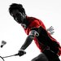
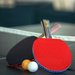

XX
上传头像
| 学号 | XXXXXXXXXXX |
| 班级 | XXXXXXXXXX |
| 学校 | 南京理工大学 |
-
羽毛球
中国是羽毛球强国，2012年伦敦奥运会获得5金创下历史壮举，国家级运动员林丹更是羽毛球史上第一位双圈大满贯。这意味着他将所有可以拿得的奖都拿遍了，而且是两遍。在这样的羽毛球文化熏陶下，我从小就喜欢打羽毛球。大学期间，我几乎每周都会去体育馆打羽毛球，还认识了许多球友。
喜爱程度 -
跑步
一个人带着耳机，在操场、公路边、公园跑步是我一天中最喜欢的时光。因为那样可以让我放下一天中的烦恼，只有这样，周围得一切才属于我自己。1公里，3公里，5公里，10公里，我的长跑距离不断上升，我的身体素质也在不断增强。
喜爱程度 -
爬山
爬山的时候，可以真正感受到大自然的美丽与力量，而人类又显得多么渺小。爬山一座山的山顶真的就是征服了那座山吗？人与自然本就不应该是征服与被征服得关系。于我而言，爬上山顶才算得上是到此一游。
喜爱程度 -
